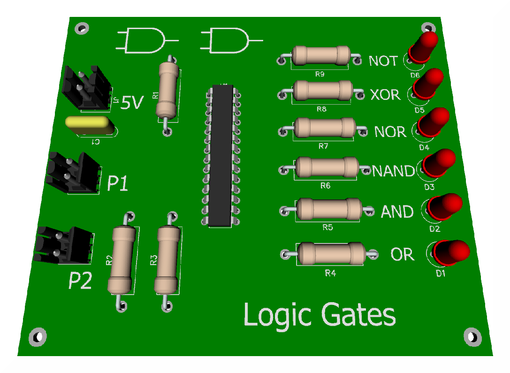

Welcome to the Logic Gate Simulator!
Meniul de deasupra este folosit pentru a naviga prin site-ul de prezentare. Acesta contine 3 optiuni , AND , NAND si Binary Interpreter , aranjate in ordinea prezentarii. Pentru a ajunge la pagina respectiva apasati pe butonul necesar.
